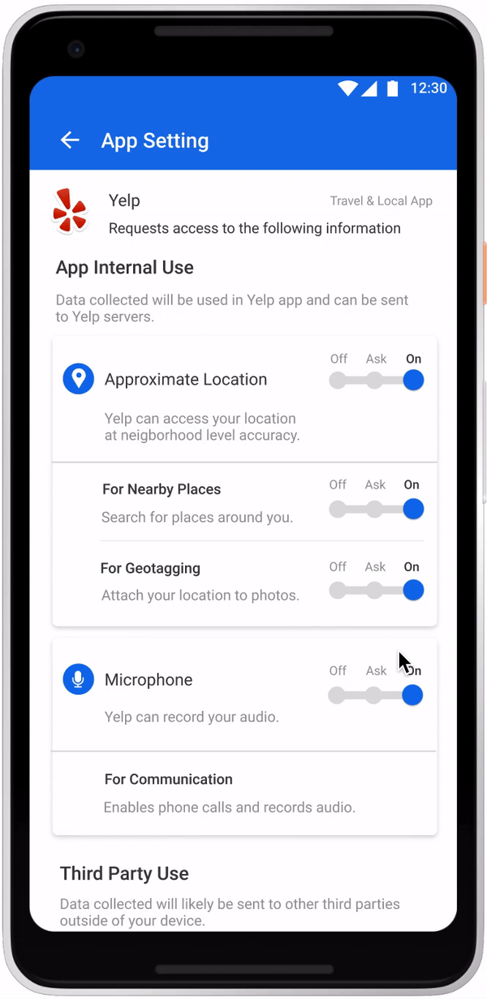

Project Brandeis - CMU x DARPA
View the Project on GitHub Placeholder/placeholder
Animation made by Shan Wang
Policy Manager is the privacy settings feature of Privacy-Enhanced Android (PEAndroid), which is a DARPA-funded project seeking to improve the privacy of the Android Open Source Project (AOSP). The Policy Manager allows users of PEAndroid to learn and control sensitive permissions associated with the use of a mobile phone to various levels of granularity and depth. The main aspect of the privacy settings is to explain to users:
The policy manager is divided into the following parts. Click to learn more about each feature.
Here is a list of all projects and research papers associated with Brandeis and Policy Manager. See more: Mobile Privacy Research
Jason Hong (See website)
Yuvraj Agarwal (See website)
Matt Fredrickson
Eran Toch
Judy Chun / Rituparna Roychoudhury / Shan Wang / Jessica Zhao
Ally Liu / Qian Wang / Aniruddh Iyer / Won-Woo Chung / Siqi Wang
Sam Kim
Jinping Liu / Shen Lu
Vida Zhang
Tianshi Li (See website)
Haojian Jin (See website)
Tianshi Li/ Judy Chun/ Rituparna Roychoudhury/ Shan Wang/ Yuan Jiang/ Yile Lu/ Mike Czapik
Swarup Sahoo / Shawn Hanna
Mike Czapik